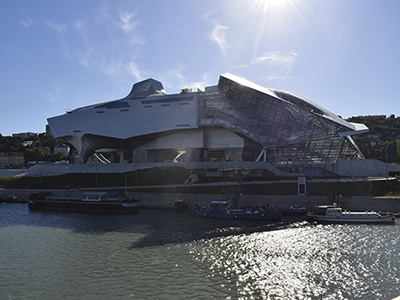

És un museu d’història natural i de les societats. En ell hi ha 2.200.000 d’objectes, aquests van des del segle XVI fins al dia d’avui. Hi destaquen dos esquelets de dinosaures complerts en un 80%. Situat a la confluència dels rius Roine i Saona, va obrir les portes el 20 de desembre de 2014. L’arquitecte és Coop Himmelbau.

Musée du Miniature et Cinéma
En aquest museu podem veure la màgia dels efectes especials del cinema, miniatures d’algunes de les escenes de pel•lícules més conegudes, i també podem veure escultures a escala real d’alguns personatges. El museu està situat al centre del VieuxLyon (barri antic). Està fundat per l’il•lustrador Dan Olhman, i la primera obertura va ser al 2005.
Musée des Beaux-Arts
És un dels museus més importants i grans de França i Europa. Situat a la Plaça Terreaux, és un edifici que abans era un monestir de monges, avui dia completament reformat té una façana increïble. A l’interior conté 72.600 obres per admirar, que van des d’obres de l’antic Egipte fins a obres de l’art Modern.
Institut et Musée Lumiére
L’Institut Lumiére és una institució académicacrada l’any 1982 pel nét de Louis Lumére, un dels inventors del cinematògraf juntament amb el seu germà Auguste Lumiére. L’Institut el trobem al barri de Monplaisir, en la casa que va construir el pare dels germans al 1900. Dins d’aquest institut està situat el museu. Aquest museu té dos objectius: conservar el patrimoni Lumiére, i la difusió de les activitats artístiques dels germans (projecció de pel•lícules, exposicions, objectes i informació...).